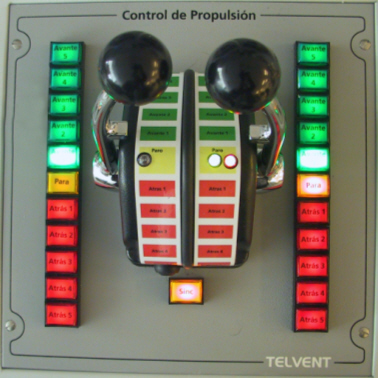

Mediante el módulo de Control de Propulsión Principal el operador puede establecer la demanda de régimen de propulsión en cada uno de los dos ejes del motor, bien mediante Telégrafo o bien mediante Palanca.

Contiene los siguientes elementos:
- Telégrafo de Babor / Estribor: cuando está seleccionado Control Manual, el régimen de demanda considerado para cada eje será el determinado por los siguientes pulsadores:
- Pulsador de Avante 5: cuando se pulsa, el sistema solicita régimen de Avante Toda.
- Pulsador de Avante 4: cuando se pulsa, el sistema solicita régimen de Avante 3/4.
- Pulsador de Avante 3: cuando se pulsa, el sistema solicita régimen de Avante 1/2.
- Pulsador de Avante 2: cuando se pulsa, el sistema solicita régimen de Avante 1/4.
- Pulsador de Avante 1: cuando se pulsa, el sistema solicita régimen de Embraga Avante.
- Pulsador de Para: cuando se pulsa, el sistema solicita régimen de Parada.
- Pulsador de Atrás 1: cuando se pulsa, el sistema solicita régimen de Embraga Atrás.
- Pulsador de Atrás 2: cuando se pulsa, el sistema solicita régimen de Atrás 1/4.
- Pulsador de Atrás 3: cuando se pulsa, el sistema solicita régimen de Atrás 1/2.
- Pulsador de Atrás 4: cuando se pulsa, el sistema solicita régimen de Atrás 3/4.
- Pulsador de Atrás 5: cuando se pulsa, el sistema solicita régimen de Atrás Toda.
Todos los pulsadores anteriores son excluyentes entre sí. Cuando uno de ellos es pulsado, se solicita el régimen correspondiente, y el pulsador se encenderá de forma intermitente hasta que el régimen solicitado sea establecido, en cuyo caso permanecerá encendido de forma fija.
El régimen solicitado por defecto es Parada.
- Palanca de Babor / Estribor: cuando está seleccionado Control RPM, el régimen de demanda considerado para cada eje será el determinado por la posición de la Palanca correspondiente.
Para que las demandas de régimen solicitadas, ya sea con Telégrafo o Palanca, sean aceptadas, debe existir algún motor arrancado y embragado en el eje correspondiente.
- Pulsador de Sincronización: este pulsador sirve para activar la función de sincronismo de palancas, es decir, cuando se pulsa ambas líneas de ejes se controlan con la palanca de estribor. El pulsador permanecerá encendido mientras esta función esté activa. Para desactivarla, se debe pulsar de nuevo, con lo que cada línea vuelve a ser controlada con su palanca, y el pulsador se apaga. Esta función no podrá activarse mientras cualquiera de las líneas esté controlada por Telégrafo.